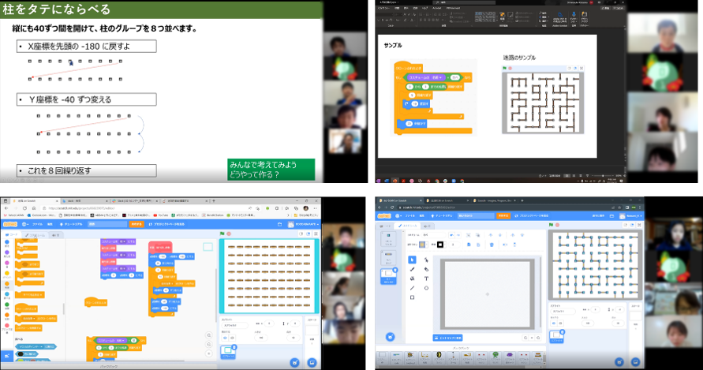

第20回 オンライン（2022年4月10日）
本日はレベルアップ講座「自動で迷路描画」
みなさま、こんにちは。 今回もオンライン開催。ニンジャとメンターが総勢19名以上参加してくれました。
CoderDojo青梅では毎回、自分の好きなテーマで自由にプログラミングしているのですが、オンライン開催が続くと、 マンネリつまり、たくさん参加してくれるニンジャでも新しいブロックを使う機会がなかったり、知らないロジックを 考える機会がなかったりする様子。毎回似たような作品になる傾向なので、今回はみんなで共通の「自動で迷路描画」に 挑戦してプログラムらしいプログラムを作るためのレベルアップ講座に取り組みました。80分間、いっぱい考えたけれど 時間が足りないくらいがんばっていました。そして「（拍手）できた！」や「あ、それやってみたかったやつだ」などの 声を聞くことができました。たまには講義スタイルもニンジャたちが活性化していいなと思いました。

本日の流れ
- オリエンテーションは、スクラッチの世界で安全・安心にSNSを使うためのセキュリティを勉強
- ワークショップは、「くりかえし作業をひとまとめにするテクニック」を知るための講座
- 発表会は、今日取り組んだ迷路では無く、みんなが自宅で制作している作品を発表
今月の青梅Dojo出欠確認です
キャンセル3組ありましたがニンジャは13組、メンターが6名、保護者は画面の向こう側なので見えませんが、総勢19名以上がワークショップに参加してくれました。そして小６・中学生のユースメンターも、ていねいなレクチャーをしてくれました。感謝。
スクラッチSNSをつかうためのセキュリティ
スクラッチで制作した作品は、インターネットに公開して「♡いいね」をもらったり、「☆お気に入り」に登録されたり、コメントをもらったりするSNSコミュニケーションする機能があります。作品を遊んでもらって、ほかのスクラッチ仲間と一緒に楽しむことができます。しかし、インターネットの世界には大勢の、様々な人がいるので「嫌な事をコメントに投稿する人」や「荒らす人」もいるかも知れません。ほとんどの人はカッコいい作品を共有するなどSNSのメリットが多いので、キケンなことは何かを知って個人情報は掲載しないなど対策を考えてインターネットを楽しみましょう。
プログラミング講座「自動で迷路描画」
プログラミングで作品をつくれるようになると、コードが複雑になっていきます。コードのブロック数が少ないと改造や不具合の修正が簡単になります。本日は、くりかえし作業をひとつにまとめるプログラミングを体験しました。
▼ 今日つくる完成イメージ
四角い柱を並べます
まずは繰り返し処理の基本Forループ的な横一列にクローンを並べるだけ。数分で作られちゃう予定だったのですが、実際にはスプライトを複製したことがないというニンジャが多かったように思います。このパートに20~30分かけたグループもあります。
棒（壁）を追加
棒を柱に立てて、というか横に倒してから0～3のランダムな回数で90度ずつ回転させて上下左右の方向を決めて隣の柱まで移動させます。ここでは乱数を使って人が予測しない方向に移動することを体験しました。
せっかくなのでブロック定義の使い方も体験。たった１個のスプライトで、コスチュームを３つ変化させてクローンすることで異なるスプライトを再現することも体験。
ブレークアウトルーム
結果、本日はどこのブレークアウトルームも会話がいっぱい。説明する人、やってみる人、うまくできない人、成功して喜ぶ人、冒頭の「（拍手）できた！」や「あ、それやってみたかったやつだ」といったコメントがたくさん。こういう講義もわるくないと思いました。

ちなみにメンター向けのあんちょこ全体像はこんな感じ。を用意しました。
作品の発表会
画面の迷路は発表ではなく制作過程のもの。発表会では自宅など今までにつくった作品の紹介になりました。初めて参加のニンジャはエンダーマンを教えてくれました。他には、重力が見せ場の花火、複数のゲームをひとつに収録したミニゲーム集、敵が大勢で襲ってくるRPGは体力回復や必殺技など様々なアクション搭載、カタカナ発話の日本語アニメなどみんな個性的な作品です。
参加者
今度は会場で会えるといいなー。ばいばーい。またねー。
子どもたちのScratch作品は↓ここで
CoderDojo青梅 Scratchスタジオ